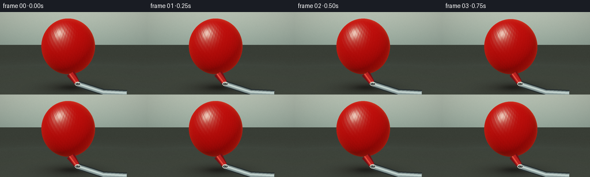
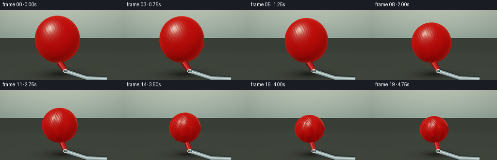
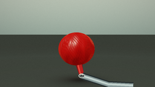
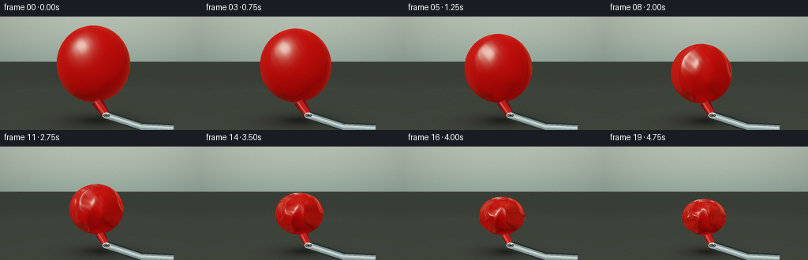
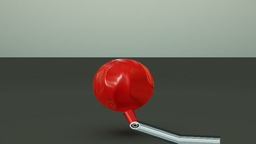
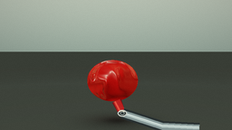

CODING AGENTS AS PIXEL WORLD MODELS
traex/DeepSeek-V4.1-Flash · phygen_020
点击播放 · 原生 RGB 像素
逐轮保存的候选
回放视频、检查图与代码变化。
每份候选均可单独播放。实际图片检查记录在下方工具轨迹中。
候选 01播放与检查图
点击播放 · 原生 RGB 像素


展开代码变化
--- 上一保存版本
+++ 本次保存版本
@@ -0,0 +1,420 @@
+"""Procedural render of a balloon collapsing under vacuum extraction."""
+
+from pathlib import Path
+import math
+
+import numpy as np
+from PIL import Image, ImageDraw, ImageFilter
+
+import artifact_io
+
+
+ROOT = Path(__file__).resolve().parent
+WIDTH, HEIGHT, FRAMES, FPS = 256, 144, 20, 4
+SS = 3
+W, H = WIDTH * SS, HEIGHT * SS
+
+CAM_ORIGIN = np.array([0.0, 0.24, 5.10], dtype=np.float64)
+CAM_TARGET = np.array([0.0, -0.04, 0.0], dtype=np.float64)
+CAM_UP = np.array([0.0, 1.0, 0.0], dtype=np.float64)
+FOV = math.radians(30.0)
+FLOOR_Y = -1.17
+
+MOUTH = np.array([0.12, -0.91, 0.63], dtype=np.float64)
+TUBE_MID = np.array([0.88, -1.18, 0.55], dtype=np.float64)
+TUBE_END = np.array([1.62, -1.25, 0.43], dtype=np.float64)
+
+
+def normalize(v):
+ return v / np.maximum(np.linalg.norm(v, axis=-1, keepdims=True), 1e-8)
+
+
+def smoothstep(x):
+ x = np.clip(x, 0.0, 1.0)
+ return x * x * (3.0 - 2.0 * x)
+
+
+def camera_setup():
+ forward = normalize(CAM_TARGET - CAM_ORIGIN)
+ right = normalize(np.cross(forward, CAM_UP))
+ up = np.cross(right, forward)
+ return forward, right, up
+
+
+def make_rays():
+ x = (np.arange(W, dtype=np.float64) + 0.5) / W * 2.0 - 1.0
+ y = 1.0 - (np.arange(H, dtype=np.float64) + 0.5) / H * 2.0
+ xx, yy = np.meshgrid(x, y)
+ forward, right, up = camera_setup()
+ aspect = WIDTH / HEIGHT
+ tan_half = math.tan(FOV * 0.5)
+ directions = (
+ forward[None, None, :]
+ + xx[:, :, None] * aspect * tan_half * right[None, None, :]
+ + yy[:, :, None] * tan_half * up[None, None, :]
+ )
+ directions = normalize(directions)
+ return directions
+
+
+RAYS = make_rays()
+
+
+def project(point):
+ forward, right, up = camera_setup()
+ q = np.asarray(point, dtype=np.float64) - CAM_ORIGIN
+ depth = np.dot(q, forward)
+ aspect = WIDTH / HEIGHT
+ tan_half = math.tan(FOV * 0.5)
+ sx = np.dot(q, right) / (depth * tan_half * aspect)
+ sy = np.dot(q, up) / (depth * tan_half)
+ return np.array([(sx + 1.0) * 0.5 * W, (1.0 - sy) * 0.5 * H])
+
+
+def srgb_to_linear(c):
+ c = np.asarray(c, dtype=np.float64)
+ return np.where(c <= 0.04045, c / 12.92, ((c + 0.055) / 1.055) ** 2.4)
+
+
+def linear_to_srgb(c):
+ c = np.clip(c, 0.0, 1.0)
+ return np.where(c <= 0.0031308, c * 12.92, 1.055 * c ** (1.0 / 2.4) - 0.055)
+
+
+def ellipsoid_hit(origin, directions, center, radii):
+ oc = origin - center
+ scaled_d = directions / radii[None, None, :]
+ scaled_o = oc / radii
+ a = np.sum(scaled_d * scaled_d, axis=-1)
+ b = 2.0 * np.sum(scaled_d * scaled_o, axis=-1)
+ c = np.dot(scaled_o, scaled_o) - 1.0
+ disc = b * b - 4.0 * a * c
+ hit = disc > 0.0
+ root = np.sqrt(np.maximum(disc, 0.0))
+ t = (-b - root) / np.maximum(2.0 * a, 1e-8)
+ return t, hit
+
+
+def balloon_state(frame):
+ t = frame / (FRAMES - 1.0)
+ deflate = smoothstep((t - 0.075) / 0.90)
+ center = np.array([
+ -0.18 + 0.15 * deflate,
+ 0.18 - 0.39 * deflate,
+ -0.03 + 0.04 * deflate,
+ ])
+ radii = np.array([
+ 0.88 * (1.0 - 0.355 * deflate),
+ 0.92 * (1.0 - 0.435 * deflate),
+ 0.73 * (1.0 - 0.385 * deflate),
+ ])
+ return center, radii, deflate, t
+
+
+def height_field(u, v, deflate, t, center, radii):
+ phase = 1.7 * t
+ envelope = np.sin(np.clip(v, 0.0, math.pi)) ** 0.62
+ amplitude = 0.05 + 0.87 * deflate ** 1.35
+
+ long_folds = (
+ 0.42 * np.sin(7.0 * u + 1.2 * np.sin(3.0 * v + phase) + 0.4 * phase)
+ + 0.26 * np.sin(12.0 * u - 2.4 * v - 0.8 * phase)
+ + 0.18 * np.cos(5.0 * u + 8.0 * v + 0.35 * phase)
+ )
+ cross_folds = (
+ 0.33 * np.sin(3.2 * v + 0.65 * np.sin(4.0 * u + phase))
+ * np.cos(2.4 * u - 0.7 * v)
+ )
+ h = amplitude * envelope * (long_folds + cross_folds)
+
+ # A depression grows into the lower-right side and travels toward the mouth.
+ mouth_dir = normalize((MOUTH - center) / radii)
+ q = np.stack(
+ (
+ np.sin(v) * np.cos(u),
+ np.cos(v),
+ np.sin(v) * np.sin(u),
+ ),
+ axis=-1,
+ )
+ q_hat = normalize(q)
+ mouth_alignment = np.clip(np.sum(q_hat * mouth_dir[None, None, :], axis=-1), -1.0, 1.0)
+ mouth_angle = np.arccos(mouth_alignment)
+ suction = deflate ** 1.15 * np.exp(-((mouth_angle / 0.48) ** 2))
+ puckers = 0.35 * np.sin(15.0 * mouth_angle + 1.8 * u + phase)
+ h -= 1.30 * suction * (1.0 + 0.22 * puckers)
+
+ # The top loses pressure first and settles into a broad, off-center dent.
+ top_dent = np.exp(-((v - 0.27) / 0.30) ** 2)
+ h -= 0.58 * deflate ** 1.5 * top_dent * (0.72 + 0.28 * np.cos(2.0 * u + 0.7))
+
+ # Fine latex grain and shallow longitudinal tension lines.
+ fine = 0.045 * np.sin(41.0 * u + 31.0 * v + 0.5 * phase)
+ fine += 0.026 * np.sin(67.0 * u - 18.0 * v - phase)
+ h += fine * (0.45 + 0.55 * deflate)
+ return h
+
+
+def surface_geometry(p, center, radii, deflate, t):
+ q = (p - center) / radii
+ q_hat = normalize(q)
+ u = np.arctan2(q[..., 2], q[..., 0])
+ v = np.arccos(np.clip(q[..., 1], -1.0, 1.0))
+
+ n = normalize(q / radii[None, None, :])
+ p_u = np.stack(
+ (
+ -radii[0] * np.sin(v) * np.sin(u),
+ np.zeros_like(u),
+ radii[2] * np.sin(v) * np.cos(u),
+ ),
+ axis=-1,
+ )
+ p_v = np.stack(
+ (
+ radii[0] * np.cos(v) * np.cos(u),
+ -radii[1] * np.sin(v),
+ radii[2] * np.cos(v) * np.sin(u),
+ ),
+ axis=-1,
+ )
+ tangent_u = normalize(p_u)
+ tangent_v = normalize(p_v)
+
+ eps = 0.008
+ h0 = height_field(u, v, deflate, t, center, radii)
+ h_u = (
+ height_field(u + eps, v, deflate, t, center, radii)
+ - height_field(u - eps, v, deflate, t, center, radii)
+ ) / (2.0 * eps)
+ h_v = (
+ height_field(u, v + eps, deflate, t, center, radii)
+ - height_field(u, v - eps, deflate, t, center, radii)
+ ) / (2.0 * eps)
+
+ slope = 0.040 + 0.012 * deflate
+ n_perturbed = normalize(n - slope * (h_u[..., None] * tangent_u + h_v[..., None] * tangent_v))
+ return n, n_perturbed, h0, q_hat
+
+
+def background_and_floor(frame, center, radii, deflate):
+ origin = CAM_ORIGIN
+ dirs = RAYS
+ yy, xx = np.meshgrid(
+ np.linspace(0.0, 1.0, H),
+ np.linspace(0.0, 1.0, W),
+ indexing="ij",
+ )
+
+ top = srgb_to_linear([0.88, 0.90, 0.87])
+ bottom = srgb_to_linear([0.62, 0.70, 0.68])
+ blend = np.clip(yy * 1.08, 0.0, 1.0)
+ wall = top[None, None, :] * (1.0 - blend[..., None]) + bottom[None, None, :] * blend[..., None]
+
+ glow = np.exp(-(((xx - 0.34) / 0.42) ** 2 + ((yy - 0.30) / 0.50) ** 2))
+ wall += glow[..., None] * srgb_to_linear([0.09, 0.10, 0.085])
+ vignette = np.clip(((xx - 0.5) / 0.72) ** 2 + ((yy - 0.48) / 0.78) ** 2, 0.0, 1.0)
+ wall *= 1.0 - 0.16 * vignette[..., None]
+
+ denom = np.where(dirs[..., 1] < -1e-6, dirs[..., 1], -1e-6)
+ t_floor = (FLOOR_Y - origin[1]) / denom
+ floor_hit = (dirs[..., 1] < -1e-6) & (t_floor > 0.0)
+ fp = origin[None, None, :] + np.maximum(t_floor, 0.0)[..., None] * dirs
+
+ floor_base = srgb_to_linear([0.55, 0.57, 0.535])
+ floor_col = np.broadcast_to(floor_base, (H, W, 3)).copy()
+ depth_fade = np.clip(t_floor / 12.0, 0.0, 1.0)
+ floor_col *= (1.0 - 0.16 * depth_fade[..., None])
+
+ shadow_c = np.array([center[0] + 0.10, center[2] + 0.10])
+ shadow_rx = radii[0] * 1.05 + 0.25
+ shadow_rz = radii[2] * 0.95 + 0.25
+ sx = (fp[..., 0] - shadow_c[0]) / shadow_rx
+ sz = (fp[..., 2] - shadow_c[1]) / shadow_rz
+ radial = np.sqrt(sx * sx + sz * sz)
+ shadow = np.exp(-(radial ** 2) * 1.5)
+ contact = np.exp(-(radial ** 2) * 8.0)
+ floor_col *= (1.0 - (0.31 * shadow + 0.25 * contact))[..., None]
+
+ reflection = np.exp(-(((fp[..., 0] - center[0]) / (radii[0] * 0.78 + 0.12)) ** 2
+ + ((fp[..., 2] - center[2]) / (radii[2] * 0.55 + 0.10)) ** 2))
+ floor_col += reflection[..., None] * srgb_to_linear([0.15, 0.025, 0.018]) * (0.55 + 0.45 * deflate)
+
+ horizon = np.exp(-np.abs(t_floor - 11.0) * 0.35)
+ image = wall.copy()
+ image = np.where(floor_hit[..., None], floor_col, image)
+ image = image * (1.0 - 0.08 * horizon[..., None]) + wall * 0.08 * horizon[..., None]
+ return image
+
+
+def shade_balloon(image, frame):
+ center, radii, deflate, t = balloon_state(frame)
+ dirs = RAYS
+ origin = CAM_ORIGIN
+ t_hit, hit = ellipsoid_hit(origin, dirs, center, radii)
+
+ p = origin[None, None, :] + np.maximum(t_hit, 0.0)[..., None] * dirs
+ # Refine the ray hit onto the displaced latex surface. This lets folds break
+ # the otherwise perfectly elliptical silhouette in the last half of the shot.
+ for _ in range(2):
+ q = (p - center) / radii
+ u = np.arctan2(q[..., 2], q[..., 0])
+ v = np.arccos(np.clip(q[..., 1], -1.0, 1.0))
+ h = height_field(u, v, deflate, t, center, radii)
+ n0 = normalize(q / radii[None, None, :])
+ denom = np.sum(dirs * n0, axis=-1)
+ correction = np.clip(0.055 * h / np.where(np.abs(denom) > 0.09, denom, 0.09), -0.10, 0.10)
+ t_hit = t_hit - correction
+ p = origin[None, None, :] + np.maximum(t_hit, 0.0)[..., None] * dirs
+ hit &= t_hit > 0.0
+
+ n_base, n, height, q_hat = surface_geometry(p, center, radii, deflate, t)
+ view = -dirs
+
+ key = normalize(np.array([-0.56, 0.78, 0.62]))
+ fill = normalize(np.array([0.82, 0.04, 0.42]))
+ back = normalize(np.array([0.38, 0.76, -0.72]))
+ half_key = normalize(key[None, None, :] + view)
+
+ ndl = np.clip(np.sum(n * key, axis=-1), 0.0, 1.0)
+ ndf = np.clip(np.sum(n * fill, axis=-1), 0.0, 1.0)
+ ndb = np.clip(np.sum(n * back, axis=-1), 0.0, 1.0)
+ ndv = np.clip(np.sum(n * view, axis=-1), 0.0, 1.0)
+ ndh = np.clip(np.sum(n * half_key, axis=-1), 0.0, 1.0)
+
+ albedo = srgb_to_linear([0.88, 0.055, 0.045])
+ ambient = 0.20 + 0.055 * (0.5 + 0.5 * n[..., 1])
+ diffuse = 0.78 * ndl ** 0.88 + 0.23 * ndf
+ color = albedo[None, None, :] * (ambient + diffuse)[..., None]
+
+ subsurface = np.clip(np.sum(-n * key, axis=-1), 0.0, 1.0)
+ color += subsurface[..., None] * srgb_to_linear([0.34, 0.065, 0.018]) * (0.35 + 0.35 * deflate)
+
+ broad = ndh ** 28
+ sharp = ndh ** 120
+ spec = (0.17 * broad + 0.75 * sharp)[..., None] * srgb_to_linear([1.0, 0.88, 0.78])
+ color += spec
+
+ fresnel = (1.0 - ndv) ** 2.7
+ rim = fresnel * (0.20 + 0.80 * ndb)
+ color += rim[..., None] * srgb_to_linear([0.93, 0.34, 0.22]) * 0.72
+
+ # Creases occlude a little light and pick up a warm transmitted edge.
+ crease_occ = np.clip(-height * (0.09 + 0.12 * deflate), 0.0, 0.26)
+ color *= (1.0 - crease_occ)[..., None]
+ ridge = np.clip(height * 0.12, 0.0, 0.10)
+ color += ridge[..., None] * srgb_to_linear([0.42, 0.10, 0.035])
+
+ color = 1.0 - np.exp(-color * 1.05)
+ color_srgb = linear_to_srgb(color)
+ alpha = hit[..., None].astype(np.float64)
+ return image * (1.0 - alpha) + color_srgb * alpha
+
+
+def draw_tube_and_neck(image, frame):
+ center, radii, deflate, t = balloon_state(frame)
+ canvas = Image.fromarray(np.clip(image * 255.0 + 0.5, 0, 255).astype(np.uint8))
+ draw = ImageDraw.Draw(canvas)
+
+ attach = np.array([
+ center[0] + 0.08,
+ center[1] - radii[1] * 0.91,
+ center[2] + radii[2] * 0.42,
+ ])
+ p_attach = project(attach)
+ p_mouth = project(MOUTH)
+
+ # A short latex neck remains anchored to the extraction fitting.
+ neck_dir = p_mouth - p_attach
+ neck_len = np.linalg.norm(neck_dir)
+ if neck_len > 1.0:
+ tangent = neck_dir / neck_len
+ normal = np.array([-tangent[1], tangent[0]])
+ w0 = (7.5 - 2.2 * deflate) * SS
+ w1 = (4.5 - 1.0 * deflate) * SS
+ poly = [
+ tuple(p_attach + normal * w0),
+ tuple(p_mouth + normal * w1),
+ tuple(p_mouth - normal * w1),
+ tuple(p_attach - normal * w0),
+ ]
+ draw.polygon(poly, fill=(119, 14, 18))
+ draw.line([tuple(p_attach), tuple(p_mouth)], fill=(184, 30, 29), width=max(2, int(8 * SS)))
+ draw.line([tuple(p_attach + normal * 2 * SS), tuple(p_mouth + normal * 1.2 * SS)],
+ fill=(230, 78, 58), width=max(1, int(1.8 * SS)))
+
+ tube_points = [tuple(project(point)) for point in (MOUTH, TUBE_MID, TUBE_END)]
+ draw.line(tube_points, fill=(40, 48, 49), width=12 * SS, joint="curve")
+ draw.line(tube_points, fill=(133, 151, 150), width=8 * SS, joint="curve")
+ draw.line(tube_points, fill=(185, 202, 198), width=3 * SS, joint="curve")
+ draw.line(
+ [tuple(tube_points[0] + np.array([-1.1 * SS, -1.5 * SS])),
+ tuple(tube_points[1] + np.array([-1.0 * SS, -1.6 * SS])),
+ tuple(tube_points[2] + np.array([-0.6 * SS, -1.4 * SS]))],
+ fill=(224, 235, 229),
+ width=max(1, int(1.2 * SS)),
+ )
+
+ # Compact metal vacuum fitting at the balloon mouth.
+ ring_center = project(MOUTH)
+ ring_r = 5.2 * SS
+ draw.ellipse(
+ [ring_center[0] - ring_r, ring_center[1] - ring_r * 0.70,
+ ring_center[0] + ring_r, ring_center[1] + ring_r * 0.70],
+ fill=(47, 53, 52),
+ outline=(195, 201, 193),
+ width=max(1, int(1.5 * SS)),
+ )
+ inner_r = 2.5 * SS
+ draw.ellipse(
+ [ring_center[0] - inner_r, ring_center[1] - inner_r * 0.65,
+ ring_center[0] + inner_r, ring_center[1] + inner_r * 0.65],
+ fill=(22, 29, 29),
+ outline=(137, 150, 146),
+ width=max(1, int(1.0 * SS)),
+ )
+ draw.arc(
+ [ring_center[0] - ring_r * 0.75, ring_center[1] - ring_r * 0.58,
+ ring_center[0] + ring_r * 0.55, ring_center[1] + ring_r * 0.38],
+ 198,
+ 334,
+ fill=(238, 232, 209),
+ width=max(1, int(1.1 * SS)),
+ )
+ return canvas
+
+
+def finish_frame(image):
+ image = image.resize((WIDTH, HEIGHT), Image.Resampling.LANCZOS)
+ arr = np.asarray(image, dtype=np.float64) / 255.0
+
+ # A restrained highlight bloom keeps the latex looking glossy at this size.
+ luminance = np.max(arr, axis=-1)
+ highlight = np.clip((luminance - 0.76) / 0.24, 0.0, 1.0)
+ glow = Image.fromarray((highlight * 255.0).astype(np.uint8), "L").filter(ImageFilter.GaussianBlur(2.2))
+ glow_arr = np.asarray(glow, dtype=np.float64)[..., None] / 255.0
+ arr = 1.0 - (1.0 - arr) * (1.0 - glow_arr * 0.18)
+
+ # Very light deterministic grain avoids a too-synthetic gradient at 144p.
+ yy, xx = np.mgrid[0:HEIGHT, 0:WIDTH]
+ grain = np.sin(xx * 12.9898 + yy * 78.233) * 43758.5453
+ grain = (grain - np.floor(grain) - 0.5) * (2.0 / 255.0)
+ arr = np.clip(arr + grain[..., None], 0.0, 1.0)
+ return np.clip(arr * 255.0 + 0.5, 0, 255).astype(np.uint8)
+
+
+def render():
+ frames = []
+ for frame in range(FRAMES):
+ center, radii, deflate, _ = balloon_state(frame)
+ image = background_and_floor(frame, center, radii, deflate)
+ image = shade_balloon(image, frame)
+ canvas = draw_tube_and_neck(image, frame)
+ frames.append(finish_frame(canvas))
+ print(f"rendered frame {frame + 1:02d}/{FRAMES}", flush=True)
+ return np.stack(frames, axis=0)
+
+
+if __name__ == "__main__":
+ video = render()
+ artifact_io.save(video, ROOT)
候选 02播放与检查图
点击播放 · 原生 RGB 像素
展开代码变化
--- 上一保存版本
+++ 本次保存版本
@@ -97,16 +97,16 @@
def balloon_state(frame):
t = frame / (FRAMES - 1.0)
- deflate = smoothstep((t - 0.075) / 0.90)
+ deflate = smoothstep((t - 0.045) / 0.94) ** 0.82
center = np.array([
- -0.18 + 0.15 * deflate,
- 0.18 - 0.39 * deflate,
- -0.03 + 0.04 * deflate,
+ -0.18 + 0.11 * deflate,
+ 0.18 - 0.54 * deflate,
+ -0.03 + 0.11 * deflate,
])
radii = np.array([
- 0.88 * (1.0 - 0.355 * deflate),
- 0.92 * (1.0 - 0.435 * deflate),
- 0.73 * (1.0 - 0.385 * deflate),
+ 0.88 * (1.0 - 0.405 * deflate),
+ 0.92 * (1.0 - 0.535 * deflate),
+ 0.73 * (1.0 - 0.435 * deflate),
])
return center, radii, deflate, t
@@ -114,15 +114,15 @@
def height_field(u, v, deflate, t, center, radii):
phase = 1.7 * t
envelope = np.sin(np.clip(v, 0.0, math.pi)) ** 0.62
- amplitude = 0.05 + 0.87 * deflate ** 1.35
+ amplitude = 0.06 + 1.18 * deflate ** 1.28
long_folds = (
- 0.42 * np.sin(7.0 * u + 1.2 * np.sin(3.0 * v + phase) + 0.4 * phase)
- + 0.26 * np.sin(12.0 * u - 2.4 * v - 0.8 * phase)
- + 0.18 * np.cos(5.0 * u + 8.0 * v + 0.35 * phase)
+ 0.48 * np.sin(6.0 * u + 1.2 * np.sin(3.0 * v + phase) + 0.4 * phase)
+ + 0.29 * np.sin(10.0 * u - 2.1 * v - 0.8 * phase)
+ + 0.21 * np.cos(4.0 * u + 7.0 * v + 0.35 * phase)
)
cross_folds = (
- 0.33 * np.sin(3.2 * v + 0.65 * np.sin(4.0 * u + phase))
+ 0.38 * np.sin(2.9 * v + 0.65 * np.sin(4.0 * u + phase))
* np.cos(2.4 * u - 0.7 * v)
)
h = amplitude * envelope * (long_folds + cross_folds)
@@ -140,18 +140,21 @@
q_hat = normalize(q)
mouth_alignment = np.clip(np.sum(q_hat * mouth_dir[None, None, :], axis=-1), -1.0, 1.0)
mouth_angle = np.arccos(mouth_alignment)
- suction = deflate ** 1.15 * np.exp(-((mouth_angle / 0.48) ** 2))
- puckers = 0.35 * np.sin(15.0 * mouth_angle + 1.8 * u + phase)
- h -= 1.30 * suction * (1.0 + 0.22 * puckers)
+ suction = deflate ** 1.05 * np.exp(-((mouth_angle / 0.57) ** 2))
+ puckers = 0.38 * np.sin(13.0 * mouth_angle + 1.8 * u + phase)
+ h -= 1.72 * suction * (1.0 + 0.25 * puckers)
# The top loses pressure first and settles into a broad, off-center dent.
- top_dent = np.exp(-((v - 0.27) / 0.30) ** 2)
- h -= 0.58 * deflate ** 1.5 * top_dent * (0.72 + 0.28 * np.cos(2.0 * u + 0.7))
+ top_dent = np.exp(-((v - 0.30) / 0.37) ** 2)
+ h -= 1.03 * deflate ** 1.35 * top_dent * (0.70 + 0.30 * np.cos(2.0 * u + 0.7))
+
+ # Slack latex gathers in a lower fold as the center of mass drops.
+ lower_fold = np.exp(-((v - 2.35) / 0.34) ** 2)
+ h += 0.72 * deflate * lower_fold * np.cos(3.0 * u + 0.6 * phase)
# Fine latex grain and shallow longitudinal tension lines.
- fine = 0.045 * np.sin(41.0 * u + 31.0 * v + 0.5 * phase)
- fine += 0.026 * np.sin(67.0 * u - 18.0 * v - phase)
- h += fine * (0.45 + 0.55 * deflate)
+ fine = 0.020 * np.sin(25.0 * u + 19.0 * v + 0.5 * phase)
+ h += fine * (0.25 + 0.75 * deflate)
return h
@@ -192,7 +195,7 @@
- height_field(u, v - eps, deflate, t, center, radii)
) / (2.0 * eps)
- slope = 0.040 + 0.012 * deflate
+ slope = 0.052 + 0.095 * deflate
n_perturbed = normalize(n - slope * (h_u[..., None] * tangent_u + h_v[..., None] * tangent_v))
return n, n_perturbed, h0, q_hat
@@ -263,7 +266,7 @@
h = height_field(u, v, deflate, t, center, radii)
n0 = normalize(q / radii[None, None, :])
denom = np.sum(dirs * n0, axis=-1)
- correction = np.clip(0.055 * h / np.where(np.abs(denom) > 0.09, denom, 0.09), -0.10, 0.10)
+ correction = np.clip(0.21 * h / np.where(np.abs(denom) > 0.09, denom, 0.09), -0.28, 0.28)
t_hit = t_hit - correction
p = origin[None, None, :] + np.maximum(t_hit, 0.0)[..., None] * dirs
hit &= t_hit > 0.0
@@ -300,9 +303,9 @@
color += rim[..., None] * srgb_to_linear([0.93, 0.34, 0.22]) * 0.72
# Creases occlude a little light and pick up a warm transmitted edge.
- crease_occ = np.clip(-height * (0.09 + 0.12 * deflate), 0.0, 0.26)
+ crease_occ = np.clip(-height * (0.07 + 0.11 * deflate), 0.0, 0.31)
color *= (1.0 - crease_occ)[..., None]
- ridge = np.clip(height * 0.12, 0.0, 0.10)
+ ridge = np.clip(height * 0.13, 0.0, 0.12)
color += ridge[..., None] * srgb_to_linear([0.42, 0.10, 0.035])
color = 1.0 - np.exp(-color * 1.05)
候选 03播放与检查图

可观测工具轨迹
实际执行的命令与返回图片。
命令 1exit 0
/bin/bash -c "pwd && rg --files -g 'prompt.txt' -g 'GENERATION_RULES.md' -g 'task_spec.json' -g '"'!*.mp4'"' -g '"'!*.mov'"'"
命令 2exit 0
/bin/bash -c "find . -maxdepth 2 -type f | sed 's#"'^./##'"' | sort | head -200"
命令 3exit 0
/bin/bash -c 'git status --short'
命令 4exit 0
/bin/bash -c 'cat prompt.txt'
命令 5exit 0
/bin/bash -c 'cat GENERATION_RULES.md'
命令 6exit 0
/bin/bash -c 'cat task_spec.json'
命令 7exit 0
/bin/bash -c "sed -n '1,240p' artifact_io.py && printf '\\n--- player ---\\n' && sed -n '1,240p' player_template.html"
命令 8exit 1
/bin/bash -c 'python generate.py'
命令 9exit 1
/bin/bash -c 'python generate.py'
命令 10exit 0
/bin/bash -c 'python generate.py'
命令 11exit 0
/bin/bash -c 'mkdir -p candidate_01 && cp inspection.png transition_check.png candidate_01/'
命令 12exit 0
/bin/bash -c "python - <<'PY'
from PIL import Image
im=Image.open('frames/19.png')
print(im.size, im.getbbox())
PY"命令 13exit 0
/bin/bash -c 'cp -r frames candidate_01/frames && cp pixels.npz index.html candidate_01/'
命令 14exit 0
/bin/bash -c 'python generate.py'
命令 15exit 0
/bin/bash -c "python - <<'PY'
from PIL import Image
im=Image.open('frames/14.png')
for y in range(55,125,5):
print(y, im.getpixel((100,y)), im.getpixel((150,y)))
PY"命令 16exit 0
/bin/bash -c "python - <<'PY'
import json
from pathlib import Path
import numpy as np
from PIL import Image
spec=json.loads(Path('task_spec.json').read_text())
pixels=np.load('pixels.npz')['pixels']
frames=[np.asarray(Image.open(f'frames/{i:02d}.png')) for i in range(spec['frames'])]
print('spec', spec)
print('pixels', pixels.shape, pixels.dtype)
print('frames', len(frames), frames[0].shape, frames[0].dtype)
print('distinct pixels between adjacent frames', [int(np.any(frames[i] "'!= frames[i-1], axis=-1).sum()) for i in range(1, len(frames))])
print('"'artifacts', {p.name: p.stat().st_size for p in [Path('index.html'), Path('pixels.npz'), Path('inspection.png')]})
PY"命令 17exit 0
/bin/bash -c 'du -sh . candidate_01 && find . -maxdepth 2 -type f | sort'
命令 18exit 0
/bin/bash -c 'python -m py_compile generate.py'
命令 19exit 0
/bin/bash -c 'ls -lh generate.py index.html pixels.npz inspection.png frames/00.png frames/19.png'
命令 20exit 0
/bin/bash -c "python - <<'PY'
from pathlib import Path
import json
import numpy as np
from PIL import Image
spec=json.loads(Path('task_spec.json').read_text())
assert spec['frames'] == 20 and spec['width'] == 256 and spec['height'] == 144 and spec['fps'] == 4.0
assert len(list(Path('frames').glob('*.png'))) == 20
arr=np.load('pixels.npz')['pixels']
assert arr.shape == (144, 256, 20)
assert (arr "'!= 0).any()
html=Path('"'index.html').read_text()
assert '__DATA__' not in html and 'const DATA=' in html
print('validated: 20 frames, 256x144 RGB, 4 fps, playable index.html')
PY"命令 21exit 0
/bin/bash -c 'git status --short -- .'
视觉工具实际返回图片 1

视觉工具实际返回图片 2

视觉工具实际返回图片 3

视觉工具实际返回图片 4

视觉工具实际返回图片 5

视觉工具实际返回图片 6

保存候选 3 份；完成命令 21 次；可验证图片返回 6 张。原始 API 响应与完整日志保留在本地。